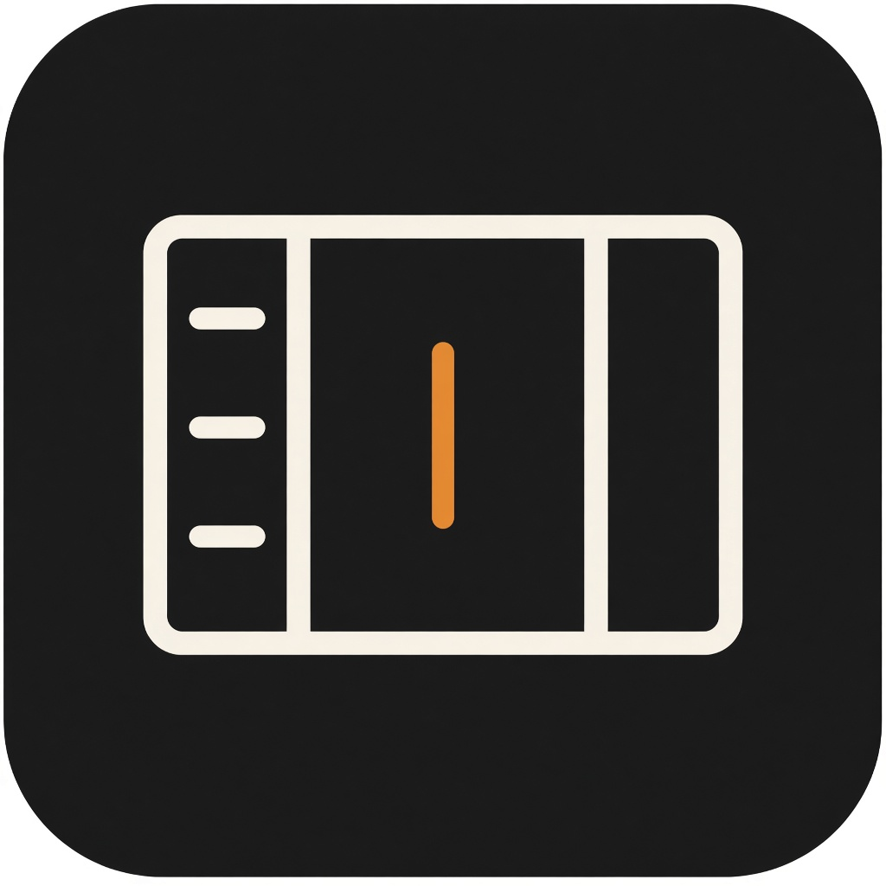
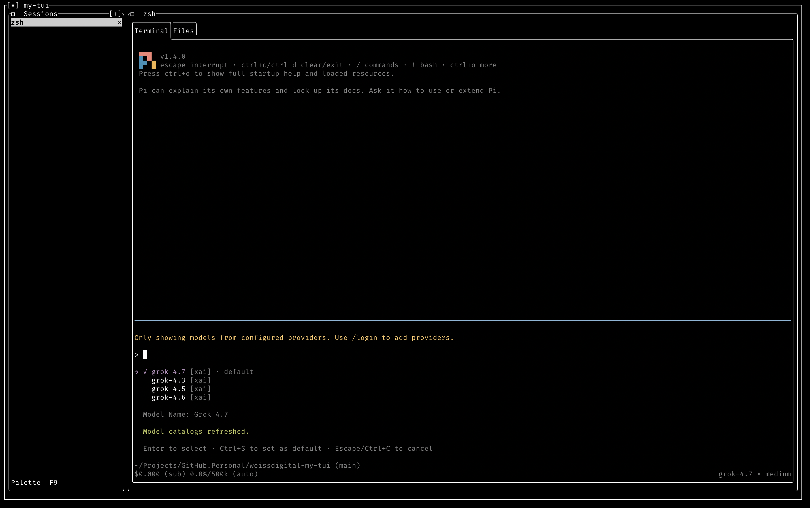

Session list
Each session is a command you choose, usually your shell. The list is restored from ~/.config/. Nothing starts until you press Enter.
Weiss Digital
my-tui

Several shells, side by side, with the files they are working in.

A text interface that runs inside the terminal you already use.
Each session is a command you choose, usually your shell. The list is restored from ~/.config/. Nothing starts until you press Enter.
The focused session has a live terminal. Sessions you are not looking at keep running.
A tree of the working directory for that session.
The file you select, in a panel beside the terminal. It stays open while you use the terminal.
These are left out on purpose.
dotnet run --project src/MyTuiFrom the source tree. A published build is a folder: run my-tui from that folder. On macOS, libmytui_pty.dylib has to stay next to my-tui. There is no Homebrew formula.